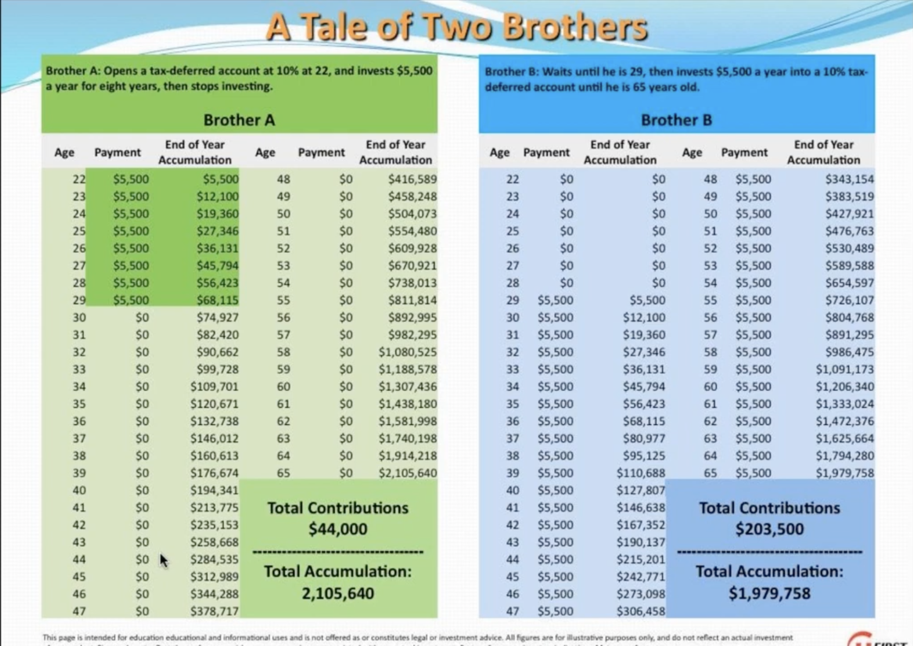

Money
Money
There are two main economic strategies that you will want to consider. Each one exists for a different socio-political climate that will most likely become reality in the coming years.
The first strategy is learning to work within the system that is currently present. If the current system prevails in the coming years, you will want to drop all the supplements you are taking. You won’t want to spend more than on hundred dollars on supplements. Instead, you want to start investing your money in the stock market because if nothing happens to the current world, the stock market is going to skyrocket exponentially so the new 1% is whoever owned stocks and I think the best life extension strategy, other than survivalism in the bunkers, is that you accumulate capital so you can buy the stem cell transplants, the brain computer interfaces, and all the new technologies that are going to save your life when you’re like a hundred. The supplements can only help to a certain extent. Only these really advanced technologies can help you so you must get rich so you can buy them.
There is a simple way to accumulate capital. The tale of two brother shows this. This chart shows exactly what you need to do. It is some work but very possible. You need to work very hard for eight years and live like a monk. Invest all your money in these years. Don’t focus on popularity, partying, and waiting to save and invest. If you invest properly, you can join the future class of oligarchs.

Don’t panic sell when the market crashes. You have to be as detached from your money as a communist is. You have to have the opportunities of a capitalist but the mindset of a communist if you want to survive the current world. Just put your money away and pretend it’s dead to you. Never touch it and then when the stock market goes up as it always does leading to these mega cities, you will probably have ten times amount the money you put in. Your money will have grown to these monstrous sizes. That is the strategy to join the ranks of people like Peter Thiel and Warren Buffet who will be able to afford these life extension treatments. You don’t want to go buying like Ben Greenfield who thinks he is bio hacking and has a bunch of these trinkets. Just get what you need. As Einstein said, “Compound Interests are the eighth wonder of the world, those who understand it get it, those who don’t pay it.”
Power corrupts and it is almost impossible not to be corrupted by neoliberalism, but we will try to be responsible and benevolent billionaires who invest in a progressive leftist future.
Option two is society collapses and we invest our money in doomsday preparing and wait for society to rise again like after the black plague. In this scenario, we will get back everything we lost before but better, just like the renaissance. Just in case, you will want to buy silver. Not gold. It is a common misconception to want to buy up gold. It is not easily tradable. Gold is hard to trade with. It is like trying to buy a piece of gum with a a hundred-dollar bill. It is not practical.
SOURCES
Source 1111111
Source 2222222
Source 333333
Source 444444
Source 5555555